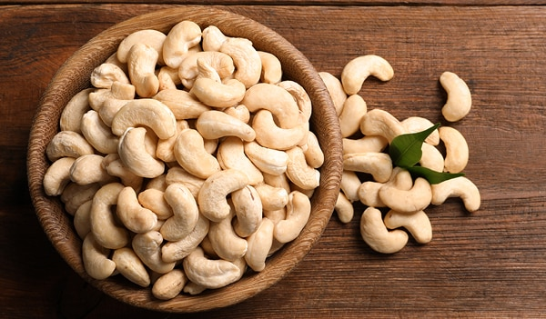

Most milk substitutes are a simple one-to-one ratio, and we have quick and easy recipes to help you out!
There are a wide variety of milk substitutes, including coconut, soy, almond, hemp, and rice milk. However, milk proteins are common ingredients in many foods. The following products frequently contain milk products:
- Processed meats, such as hot dogs, lunch meat, and breaded meats
- Muffins, cakes, cookies, pancakes, waffles, and other baked goods
- High-protein cereals
- Egg substitutes
- Salad dressing and mayonnaise
- Margarine and other butter substitutes
- Chocolate and caramel
When in doubt, look for kosher foods listed as “pareve” or “parve.” These should not contain milk products.
We can make receipes using substitutes

Almond

Cashew